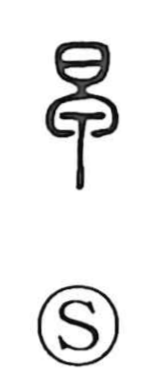

早

Uncategorized
Kun: hayai, hayamaru, hayameru, asa | On: sou, sa
early ・ morning ・ young ・ quick
Explanation
Shirakawa takes 早 as a loan graph whose original shape depicts the bowl of a spoon—the part used to scoop or scrape things up. When a handle is added, this base form yields the full character for spoon (匙). Because 早 shows that scooping, scraping tip, it alternates with 蚤 in early texts; Mencius, for example, writes 蚤起 for rise early. Although 早 is not used with the literal sense spoon, its sound was borrowed, and the character came to write ideas such as early, morning, and young.